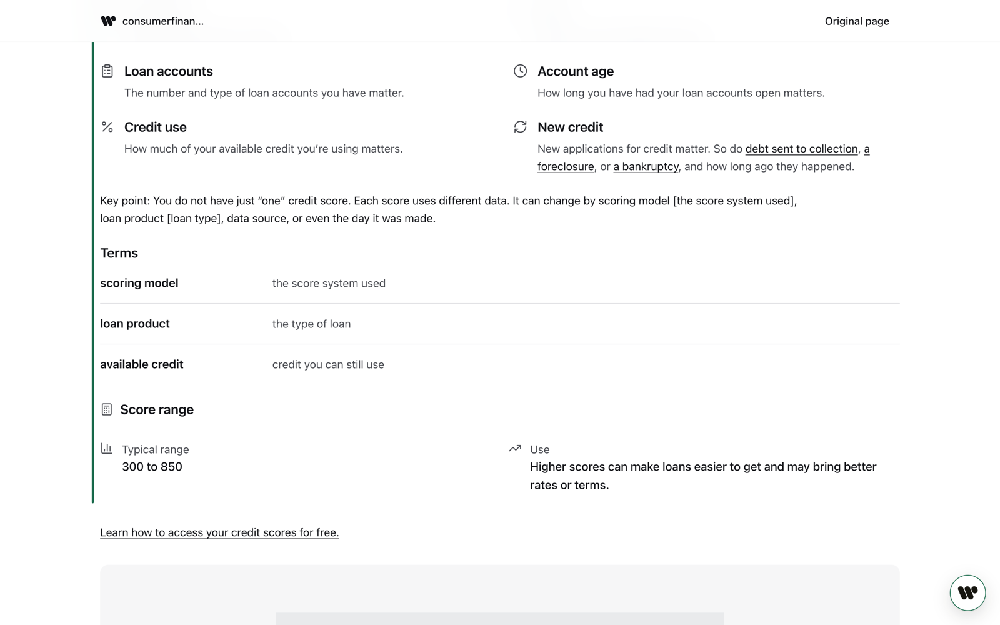
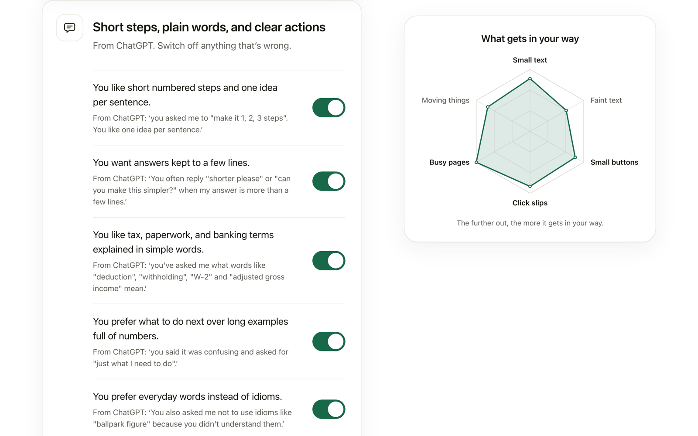
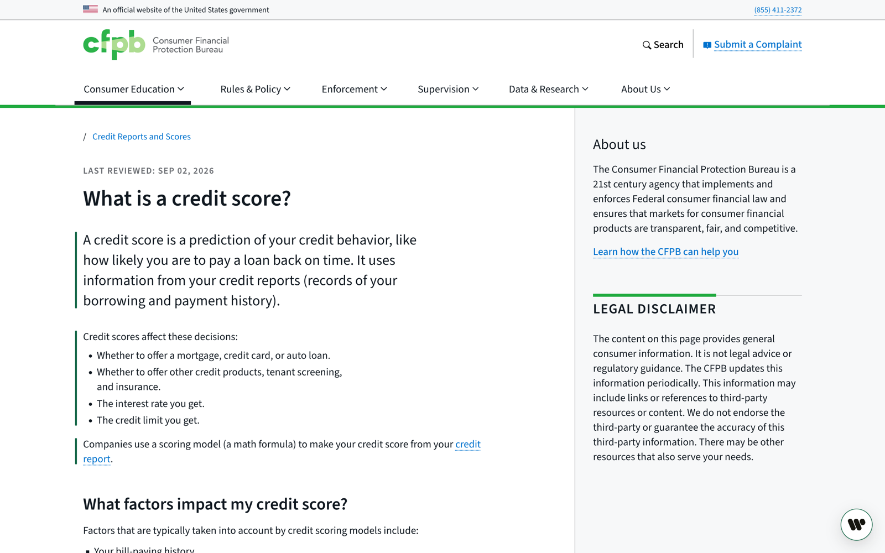
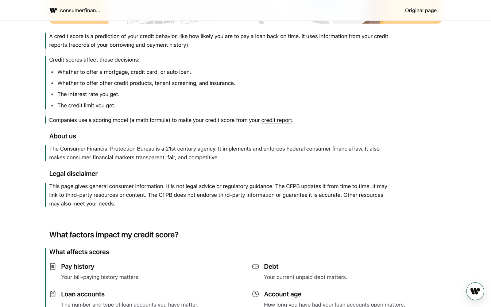
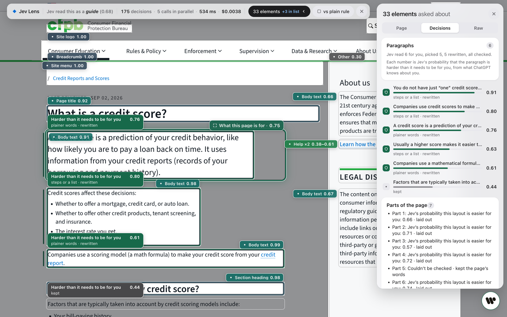

Fits every website to the person using it, without asking what's wrong with you.
Accessibility standards are fixed. People aren't. WebAble learns what gets in your way on the web, like small text, faint words, small buttons, busy pages and hard paragraphs. Then it changes every page to fit you.
Free and open source. Needs Chrome 135 or newer, and WebAble's server running on your own computer. How to set it up.

A real page from consumerfinance.gov, the US government's consumer finance agency, laid out by WebAble for someone who is new to money terms and likes short steps.
What it does
Four things, on every page

1. Learns how you read
A short setup measures a comfortable text size, whether faint words are hard to see, how precisely you click, and how much busy pages slow you down, on three real websites. Then it asks the AI assistant you already use how you like things explained.

2. Rewrites hard paragraphs for you
Jev, a fast decision model, scores each paragraph: is it harder than it needs to be for you? The ones it picks are rewritten in place, with a thin green line beside them. Click the line to see the original.

3. Lays out reading pages the way you like
Busy reading pages become a clean page built from the site's own content: steps, key facts, number tiles, tables and definitions. The page's links still work, and any section can go back to the page's own words.

4. Shows its work
The Jev view shows every decision on the page, what it cost and how long it took. Every change is checked first. Anything that breaks the page, drops a number or adds a claim is undone.
It also fits text size, contrast, click areas and motion in place on every site.
What we've measured
Numbers from automated test runs
32 of 50popular sites got larger text with nothing left broken
22of its own changes undone on 15 sites, after a check failed
430 msmedian time for Jev to read a page, at $0.0034 a page
125kinds of page element, with 86–92% accuracy on pages it was never tuned on
These come from our own runs on real sites and from simulations, not from tests with people. The details and how to run them again are in docs/CLAIMS.md.
Try it
Set it up on your computer
WebAble has two parts: the Chrome extension, and a small server that runs on your computer. The server holds the API keys and talks to the AI models. There's no hosted version yet.
Get the code and the keys
You'll need Node 24, pnpm 10, Google Chrome, a TypeSafe API key for Jev and an OpenAI API key.
git clone https://github.com/RJ-Tabelon/WEBABLE-PROTOYPE.git webable
cd webable
pnpm install
It answers only on your own computer, at 127.0.0.1:41741.
Add the extension to Chrome
Download the extension and unzip it, or build it with pnpm --filter @webable/extension build. Open chrome://extensions, turn on Developer mode, click Load unpacked and pick the unzipped folder. The setup opens in a new tab.
Demo websites
Two made-up websites that are hard to use on purpose
They're plain HTML, CSS and JavaScript, with nothing written for WebAble. Open them with WebAble on, then off, and compare.